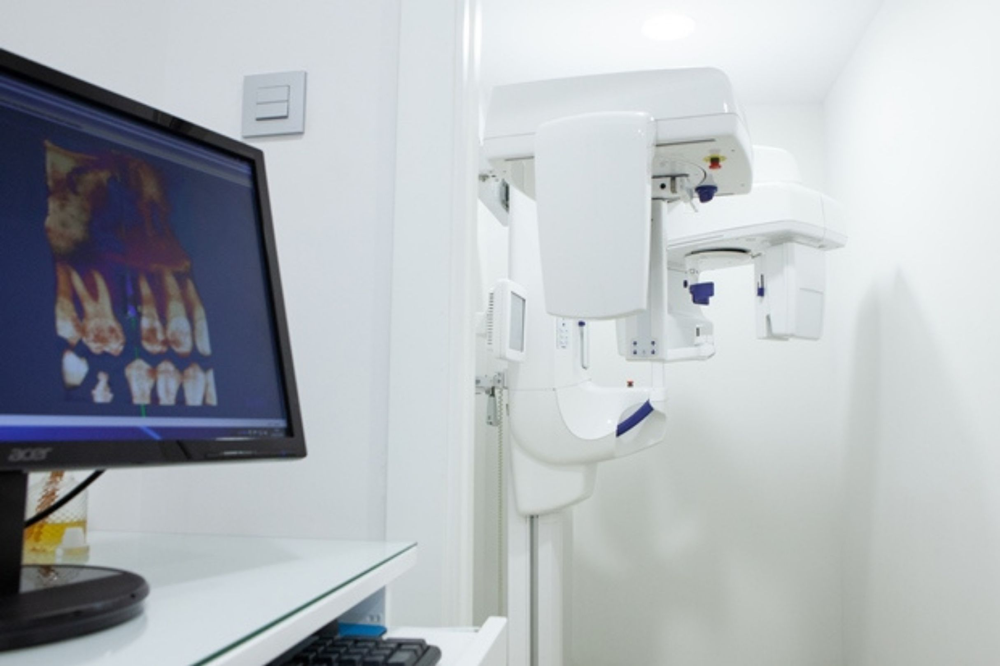
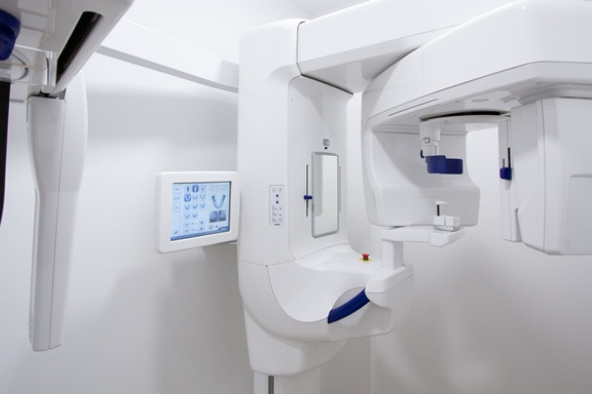

+20 Años de experiencia
Filosofía basada en la confianza, la profesionalidad y el trato individualizado según la necesidad de cada persona.
En la Clínica Dental Guayero contamos como método de diagnóstico de última generación con aparatos de rayos para realizar radiografías intraorales (de uno o varios dientes) y con un aparato de rayos panorámico 3D que hemos adquirido recientemente, el GENDEX GXDP-700.
Llámanos y pide tu citaEl GENDEX GXDP-700 nos permite realizar escáner radiográficos 3D de altísima calidad así como radiografías panorámicas (de toda la boca) y telerradiografías (lateral de la cabeza) de articulación temporomandibular de maxilar para determinar la edad de crecimiento de los niños.

Gracias a las funcionalidades del GENDEX GXDP-700 permite a las Doctoras realizar in situ un correcto diagnóstico de las dolencias bucales, sin necesidad de que el paciente tenga que acudir a otro lugar para realizarse radiografías.
Asimismo nos permite realizar una meticulosa planificación de los casos de cirugía ortognática y ortodoncia con la incorporación de la foto en 3D del paciente que ofrece una visión totalmente real de los tejidos blandos.
También realiza análisis de los casos de endodoncia y posibles fracturas radiculares que con otros métodos pasan desapercibidas.
Para planificación de implantes dentales se dispone de una galería de la mayoría de los implantes que te permite diseñar la rehabilitación según la disponibilidad de hueso. Se puede marcar el dentario en toda su longitud e introducir un sistema de alerta de seguridad que te avisa si estás próximo al nervio en cualquier ángulo.
Podemos hacer estudio de la articulación temporomandibular (ATM) y de cualquier lesión ósea, tumores o quistes, en la región craneomaxilomandibular.
El equipo combina una alta resolución con la menor dosis de radiación posible.

Filosofía basada en la confianza, la profesionalidad y el trato individualizado según la necesidad de cada persona.
Además de un gran equipo médico y humano, nuestros centros disponen de la más alta tecnología para ofrecer la máxima calidad.
Nuestras instalaciones son modernas y cómodas, adaptadas para todo tipo de minusvalías, por eso están a pie de calle.
Si desea más información sobre nuestros servicios o solicitar una cita, póngase en contacto con nosotros.
info@clinicadentalguayero.es
Avda. Juan Carlos I, 26 –
Edificio Guayero, Locales 7, 8 y 9
38650 Los Cristianos
Lunes a Viernes de 10:00-19:00h